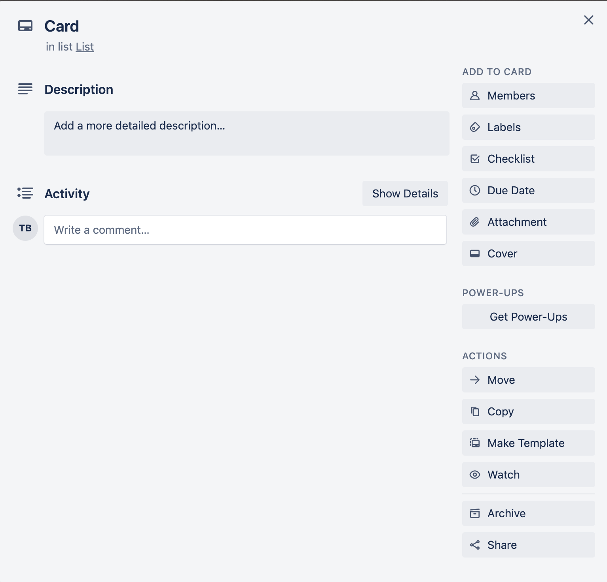

In Trello, cards are the fundamental unit of a board. Cards are used within lists to
organize tasks and ideas.
Cards are the fundamental unit of a board. Cards are used within lists to organize tasks
and ideas. To add a card to a list, click + Add a card if it is
the first card on a list, or + Add another card if you are adding
a card to an existing list. Click on an existing card to customize it. There are many
ways to customize a card. You can drag cards across lists, add members to cards, label
cards, attach files, create checklists, etc. Figure 1: Result of clicking on a card
